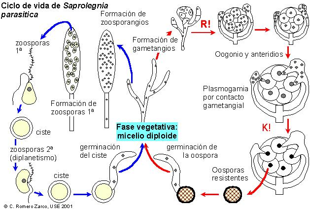
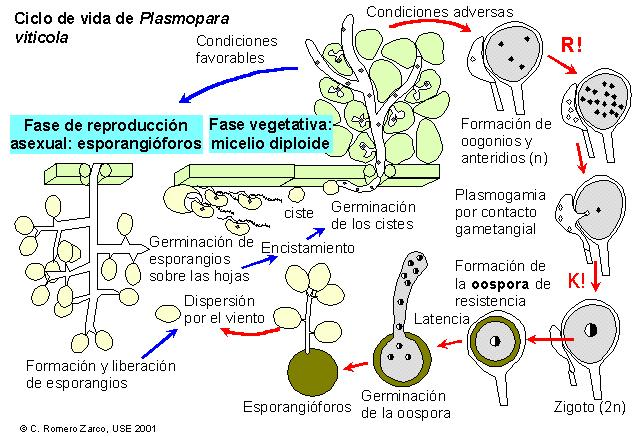

| Divisiones | Clases | Pared celular | Micelio | Diásporas |
| Oomicotas | Oomicetos y 2 clases poco importantes* |
Celulosa + poliglucanos | Sifonal | Zoosporas heterocontas, quistes y oosporas |
| Eumicotas | Quitridiomicetos Zigomicetos Ascomicetos Basidiomicetos Deuteromicetos |
Quitina + poliglucanos | Sifonal o septado |
Zoosporas opistocontas, quistes y zigotos
de resistencia. Diversos tipos de conidios y aplanosporas Varios tipos de meiosporas |

